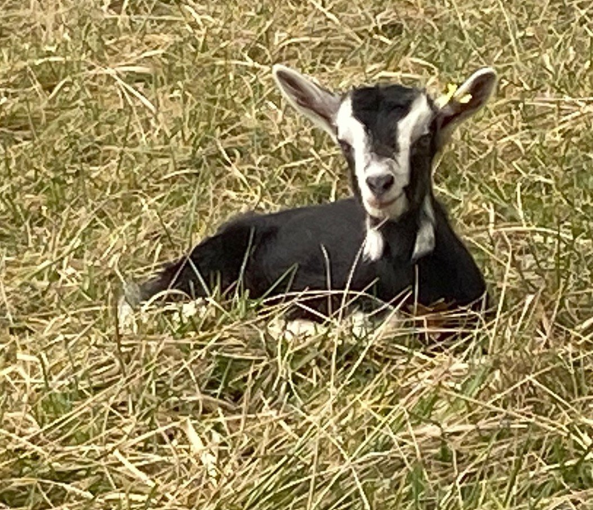
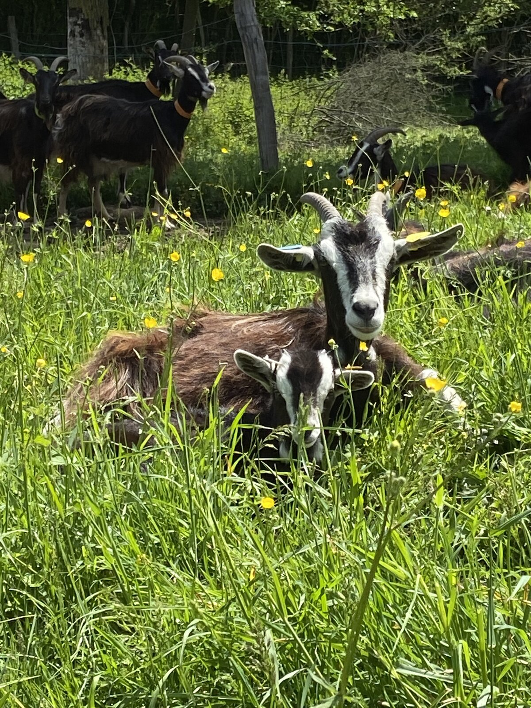
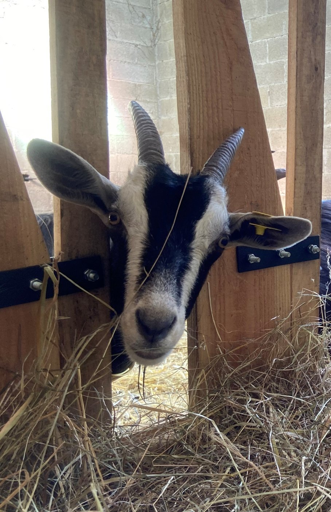
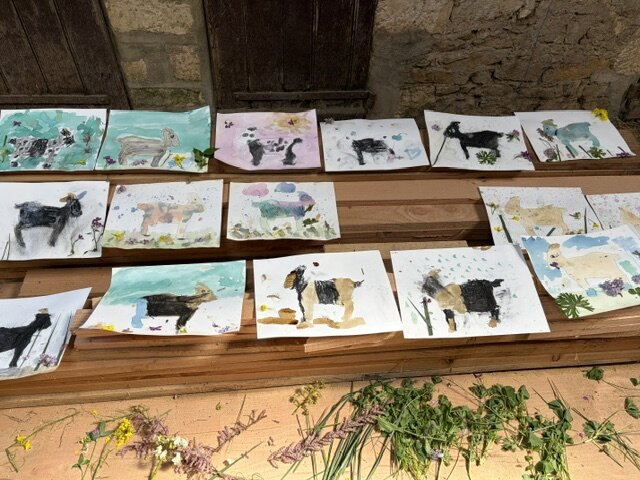
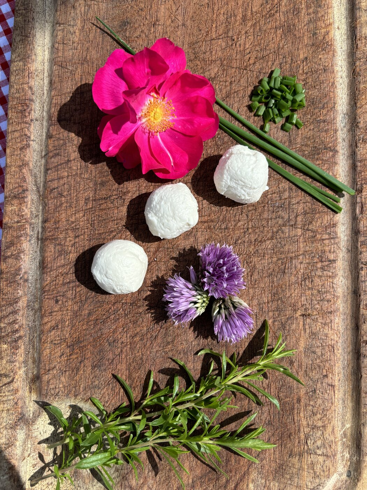
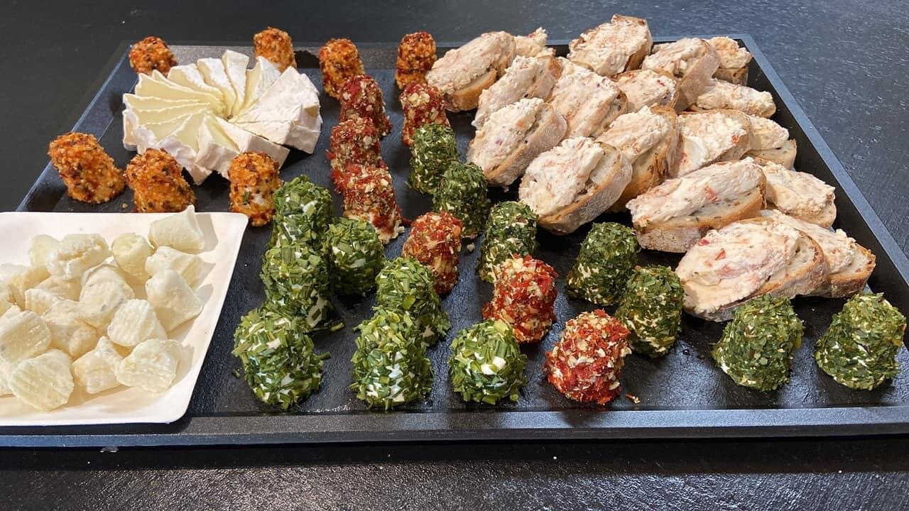
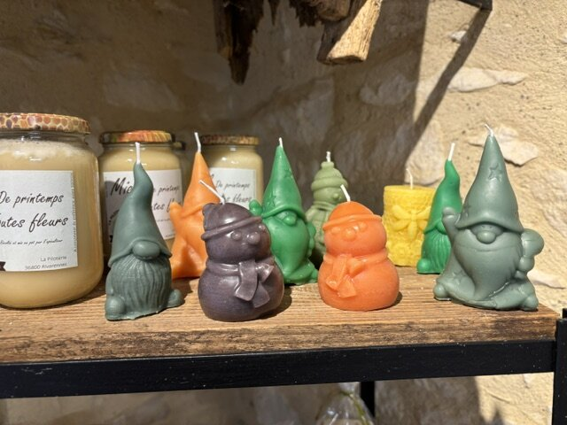

Accueil / Visites & animations
Plus qu'une simple visite, nous vous proposons de venir à la rencontre des chèvres. Vous pourrez découvrir leur caractère sociable, curieux et communicant.
Afin de prolonger votre immersion dans notre ferme et de profiter de notre cadre paisible, nous vous proposons ensuite des séries d'activités adaptées aux juniors, adultes, seniors et personnes à besoin spécifique. Vous trouverez le détail ci-dessous. Les propositions sont adaptables, n'hésitez pas à nous contacter.
♿ La ferme est accessible aux personnes à mobilité réduite.

Sur rendez-vous, venez rencontrer le troupeau et découvrir le quotidien de la ferme.

Pour les groupes constitués, centres de loisirs, associations : une animation adaptée au nombre et à l'âge des participants.

Une découverte adaptée aux scolaires : élevage, alimentation animale, transformation du lait.
Un accueil d'environ 2h15, rythmé en plusieurs temps :
5 minutes
50 minutes
45 minutes
selon besoin, 20 minutes

Réalisation d'un portrait de chèvre à l'aide de peinture végétale et d'éléments naturels prélevés dans le milieu. Chaque enfant repart avec son œuvre.

À l'aide d'un plan, les enfants partent à la cueillette de la flore comestible du moment et composent leur recette de fromage frais.

Les enfants découvrent la vie d'une ruche : exposition, matériel de l'apiculteur, ruche pédagogique. Puis ils réalisent un nichoir à abeille sauvage.
Un aperçu de l'atelier peinture avec les enfants, entre pinceaux, couleurs végétales et portraits de chèvres.
Réservation par mail à fromagerielapiloterie@gmail.com ou par téléphone au 06 95 69 07 69.

Après une explication sur la fabrication des fromages, vous associerez les saveurs du chèvre, du miel et des fleurs comestibles du moment, et laisserez libre cours à votre créativité dans la réalisation de toasts festifs.
15 € / personne

Découvrez la recette et réalisez votre pain d'épices avec le miel, les œufs et le lait de la ferme. Vous repartirez avec votre production.
15 € / personne

Lorsque nous récoltons le miel, les résidus de cire sont fondus et épurés, puis moulés en bougie naturelle. Venez découvrir cette technique simple et réaliser votre propre bougie. Vous repartirez avec votre création.
15 € / personne
Description à venir.
Pour les groupes de plus de 20 personnes, nous recommandons particulièrement notre visite / animation autour de la ruche, bien adaptée à ce format.
Détail, durée et tarifs des animations pour adultes, seniors et personnes à besoin spécifique seront ajoutés ici très prochainement. En attendant, contactez-nous directement pour construire ensemble votre visite ou votre animation, et recevoir un devis.
Décrivez-nous votre demande, nous revenons vers vous avec un devis personnalisé.